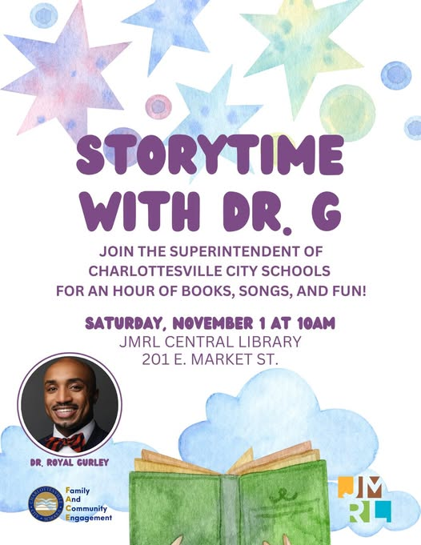

Charlottesville City's Community Schools model is operationalized by the Community Mentorship Coalition that organizes ten schools into three programs: Confidence and Comprehension Clubs for elementary literacy, Bridge Builders for middle school belonging, and the Life Skills Academy for high school career preparation and postsecondary planning. A Community Talent Bank system is recruiting and placing the volunteers who deliver work across the three programs.
The division is also extending its Community Schools model beyond the school day through a growing network of literacy hubs in trusted community spaces, beginning with First Baptist Church and expanding to The Point Church, the Jefferson School African American Heritage Center, and the Boys & Girls Club. Complementing the hubs, "Crack the Code" is a literacy-focused event that helps parents and caregivers interpret SOL assessments and NWEA MAP reports so they can support their children's reading at home.
Along with events like, "Storytime with Dr. G". These efforts are making a difference in the community. Charlottesville's depth of civic infrastructure supports the Coalition: 134 community partners, including several centers within the University of Virginia.

"Storytime with Dr. G" served as the inaugural community literacy event for Charlottesville's Community Schools model. It was a partnership between Charlottesville City Schools and Jefferson-Madison Regional Library and was led by Superintendent Dr. Royal Gurley.